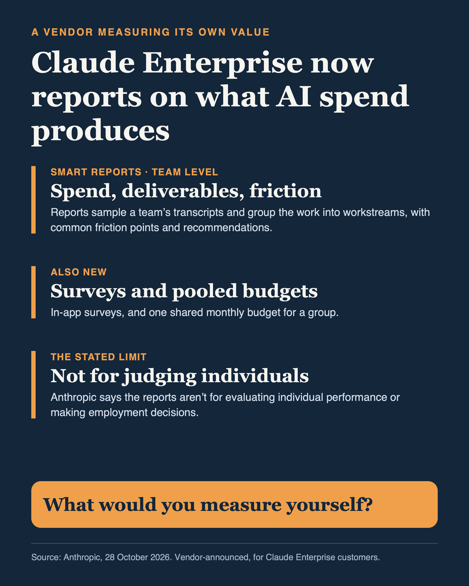

Anthropic's reports on what AI spend produces
Anthropic now offers Claude Enterprise customers reports on what their AI spend produces. The vendor is helping to measure the value of its own product.
The smart reports, announced on 28 October, sample a team's transcripts and group the work into workstreams. For each one, they show spend, deliverables and common friction points, such as a missing connector. They also recommend things like recurring workflows to turn into skills.
Anthropic also added in-app surveys and pooled group budgets. It says the reports aren't for evaluating individual performance or making employment decisions.
I think this is useful, and I'd still keep it in perspective. If you're running AI adoption, a report showing where work gets stuck can tell you what to fix next. But it comes from the company selling the tool, so I'd check it against a measure of your own. And since the reports draw on transcripts, I'd tell people what's being sampled and why before someone asks.
